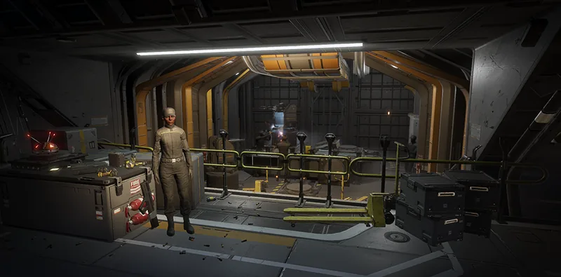

“Reinforces 哨戒炮 with state-of-the-art cyanoacrylate adhesives, greatly improving their 耐久度 under 火焰.— 舰船管理终端
Reinforces 哨戒炮 with state-of-the-art cyanoacrylate adhesives, greatly improving their 耐久度 under 火焰.
— 舰船管理终端
高级建造 is a Tier 2 舰船模块 升级 for the 工程港.
增加……的生命值 哨戒炮 战略配备 by 50%.
1.000.0002024-02-08
Released with the game.